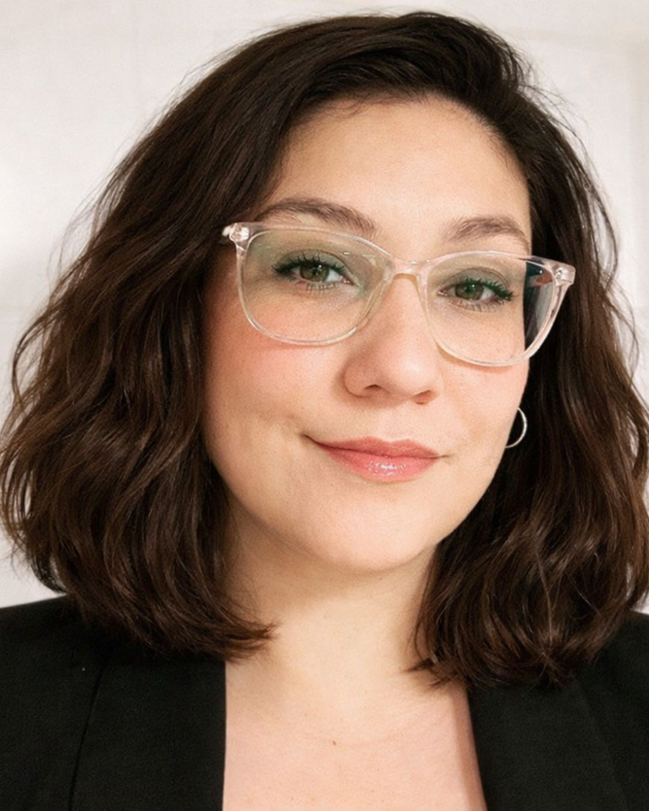

Melina Dalmao

- Montevideo, Uruguay
- mdalmao@gmail.com
- 09******2
Perfil
Estudiante de comunicación con enfoque en el desarrollo de ideas y contenidos.
Busco formarme en distintos ámbitos del área para construir un perfil versátil y en constante crecimiento.
Formación
- 2026- UTU | Técnico en Comunicación Social (Cursando)
- 2011/2013- UdelaR | Licenciatura en Ciencias de la Comunicación (Incompleto)
- 2007/2009- Liceo Nro1 Ipolll | Bachillerato en Ciencias Sociales
- 2004/2006- Liceo Nro6 | Ciclo Básico
- 1997/2003- Escuela Nro9 | Primaria
Otros estudios
- 2024- Siesade English Center | Ingles conversacional
- 2022- Fundación Carlos Slim | D3sarrollador de contenido digital y Asistente web
- 2001- Inadi | Microsoft Ofrece
Habilidades Personales
- Creatividad
- Treabajo en equipo
- Capacidad de adaptación
- Organizacion
- Responzabilidad